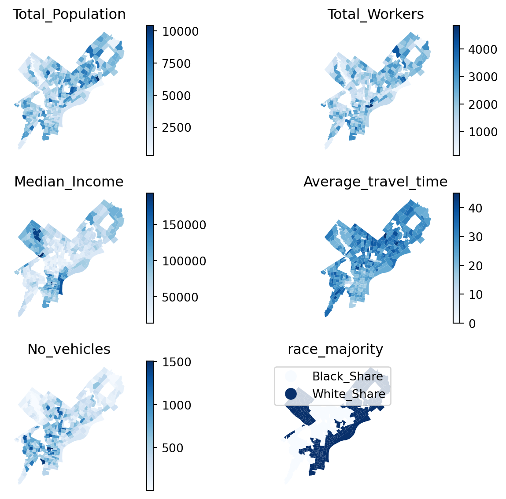

In order to address disparities in transportation access and prioritize vulnerable communities, we developed a Transit Vulnerability Index (TVI) for Philadelphia. This index integrates a variety of demographic, transit accessibility, and environmental factors to identify areas most in need of impactful transit interventions. Inspired by existing methodologies, such as the work by Duan et al. (2016), our TVI emphasizes factors such as median income, racial demographics, workforce commuting patterns, access to vehicles, and mode choice. Additionally, we incorporate the mean travel time to work, which directly impacts daily commute times, and the city’s heat vulnerability index, which identifies areas at risk during extreme heat events.
Drawing from the findings in Duan et al. (2016), the TVI recognizes that vulnerability is not solely about exposure to transportation challenges but is also shaped by social and environmental factors, such as income inequality and heat stress, which exacerbate the mobility challenges faced by disadvantaged populations. We focus on these factors at the census tract level.
Note: we opted to not go lower than census tract level to reduce margins of error in our result.
Loading Census ACS data:
Code
import osimport pandas as pdimport matplotlib.pyplot as pltimport geopandas as gpdimport cenpy as cnyimport pygrisfrom pygris import tractsimport numpy as npimport altair as altimport seaborn as snsimport shapelyfrom shapely.geometry import Point
Code
# Establish connection to the APIacs = cny.remote.APIConnection("ACSDT5Y2023")# Define variables and query data for Philadelphia Countyvariables = ["B19013_001E", # Median household income in the past 12 months"B01003_001E", # Total population"B11001_001E", # Total households"B08006_001E", # Total workers (commuting population) "B02001_002E", # White alone"B02001_003E", # Black or African American alone"B08013_001E", # Mean travel time to work"B08201_002E", # No vehicles available"B08201_003E", # 1 vehicle available"B08201_004E", # 2 vehicles available"B08201_005E", # 3 vehicles available"B08201_006E", # 4 or more vehicles available"B08006_002E", # Car, truck, or van – drove alone"B08006_003E", # Car, truck, or van – carpooled"B08006_008E", # Public transportation (excluding taxicab)"B08006_015E", # Walked"B08006_017E", # Bicycle"B08006_018E"# Worked at home]# Query dataacs_data = acs.query( variables, geo_unit="tract", geo_filter={"state": "42", "county": "101"})# Format GEOIDacs_data['GEOID'] = ( acs_data['state'] + acs_data['county'] + acs_data['tract'])# Rename columns acs_data = acs_data.rename(columns={'B19013_001E': 'Median_Income','B01003_001E': 'Total_Population','B11001_001E': 'Total_households','B08006_001E': 'Total_Workers','B02001_002E': 'White_Alone','B02001_003E': 'Black_Alone','B08013_001E': 'Mean_travel_time','B08201_002E': 'No_vehicles','B08201_003E': 'One_vehicle','B08201_004E': 'Two_vehicles','B08201_005E': 'Three_vehicles','B08201_006E': 'Four_or_more_vehicles','B08006_002E': 'Drove_Alone','B08006_003E': 'Carpooled','B08006_008E': 'Public_Transportation','B08006_015E': 'Walked','B08006_017E': 'Bicycle','B08006_018E': 'Worked_at_Home'})# Drop columnsacs_data = acs_data.drop(columns=['state', 'county','tract'])# Downloading census tract geometries for Philadelphia Countyphila_tracts = tracts(state="42", county="101", cb=True, year=2023)# Merge ACS data with geometries on GEOIDacs_data = phila_tracts.merge(acs_data, on="GEOID", how="left")# Drop columnsacs_data = acs_data[['GEOID', 'geometry', 'Median_Income', 'Total_Population', 'Total_households', 'Total_Workers','White_Alone', 'Black_Alone', 'Mean_travel_time', 'No_vehicles', 'One_vehicle', 'Two_vehicles', 'Three_vehicles', 'Four_or_more_vehicles', 'Drove_Alone', 'Carpooled','Public_Transportation', 'Walked', 'Bicycle', 'Worked_at_Home']]acs_data.head
Based on the following maps and bar chart, We know that most workers in Philadelphia commute to work by car. The share of workers who take transit is significantly lower with the exception of North Philadelphia (Strawberry Mansion, Brewerytown). As we will see below, these neighborhoods also have some of the lowest median incomes in Philadelphia. The lack of capital often reduces such users to dependent riders, who will travel by transit regardless of the level of service. However, such riders are also worthy of improved level of service.
Code
# List of columns to plotcolumns_to_plot = ['Drove_Alone', 'Carpooled', 'Public_Transportation', 'Walked', 'Bicycle', 'Worked_at_Home']acs_data_melted = acs_data.melt(id_vars=['GEOID'], value_vars=columns_to_plot, var_name='Mode of Transportation', value_name='Count')brush = alt.selection_interval()# Map1: Car use to workmap_plot = alt.Chart(acs_data).mark_geoshape().encode( color=alt.Color('Drove_Alone:Q', scale=alt.Scale(scheme='blues')), tooltip=['Drove_Alone:Q', 'Carpooled:Q', 'Public_Transportation:Q', 'Walked:Q', 'Bicycle:Q', 'Worked_at_Home:Q']).add_params(brush).properties( width=300, height=500, title="Drove Alone to Work")# Map2: Public Transportation use to workmap_plot1 = alt.Chart(acs_data).mark_geoshape().encode( color=alt.Color('Public_Transportation:Q', scale=alt.Scale(scheme='reds')), tooltip=['Drove_Alone:Q', 'Carpooled:Q', 'Public_Transportation:Q', 'Walked:Q', 'Bicycle:Q', 'Worked_at_Home:Q']).add_params(brush).properties( width=300, height=500, title="Public Transportation to Work")# Map3: Total mode of transportationbars = alt.Chart(acs_data_melted).mark_bar().encode( x=alt.X('sum(Count):Q', title="Total Number of Workers by Mode of Transportation"), y=alt.Y('Mode of Transportation:N', title="Mode of Transportation"), color='Mode of Transportation:N').transform_filter( brush).properties(width=300)# Combine the mapschart = alt.vconcat( alt.hconcat(map_plot, map_plot1), bars)chart
Demographic Indicators
For our analysis, we aimed to examine key indicators that could influence a commuter’s mode choice. We first compared the total population and total number of workers in each census tract to identify where work-based trips are most likely to be generated. The two graphs show a strong correlation, indicating that areas with larger populations also tend to have a higher number of workers.
In 2023, the median household income in Philadelphia was $60,698, adjusted for inflation. However, when visualizing the data on the map, income disparities become apparent. High-income areas are concentrated in the Northwest and South, while the West, North, and Northeast regions fall below the median income threshold, highlighting areas of economic inequality.
We explored travel time across different census tracts to identify areas with greater mobility challenges. As expected, regions farther from Center City experience longer travel times. However, it is noteworthy that travel times for residents in North Philly and Lower West Philly are higher than those in other nearby areas, despite their proximity to the city center.
Our map also reveals several key correlations. Areas with a majority of Black households tend to have a higher proportion of households without vehicles. Additionally, these areas generally exhibit lower median incomes, further indicating socioeconomic disparities that influence transportation needs and mode choice across the city.
Code
# Convert object columns to numeric, coercing errors into NaN (missing data)cols_to_convert = ['Median_Income', 'Total_Population', 'Total_Workers', 'White_Alone', 'Black_Alone','Mean_travel_time', 'No_vehicles', 'One_vehicle', 'Two_vehicles', 'Three_vehicles', 'Four_or_more_vehicles']for col in cols_to_convert: acs_data[col] = pd.to_numeric(acs_data[col], errors='coerce')# Calculate the share of each race relative to the total populationacs_data['White_Share'] = acs_data['White_Alone'] / acs_data['Total_Population']acs_data['Black_Share'] = acs_data['Black_Alone'] / acs_data['Total_Population']# Assign the race with the highest shareacs_data['race_majority'] = acs_data[['White_Share', 'Black_Share']].idxmax(axis=1)# Clean dataacs_data = acs_data[acs_data['Median_Income'] !=-666666666]# Calculate Mean travel time in minutesacs_data['Average_travel_time'] = (acs_data['Mean_travel_time'] / acs_data['Total_Workers']).fillna(0).apply(lambda x: max(x, 0))acs_data['Average_travel_time'] = acs_data['Average_travel_time'].round(0).astype(int)
C:\Users\USER\miniforge3\envs\musa-550-fall-2023\lib\site-packages\geopandas\geodataframe.py:1538: SettingWithCopyWarning:
A value is trying to be set on a copy of a slice from a DataFrame.
Try using .loc[row_indexer,col_indexer] = value instead
See the caveats in the documentation: https://pandas.pydata.org/pandas-docs/stable/user_guide/indexing.html#returning-a-view-versus-a-copy
Code
# Create a list of the columns to plotcolumns_to_plot = ['Total_Population', 'Total_Workers', 'Median_Income','Average_travel_time', 'No_vehicles', 'race_majority']# Set up a grid of subplotsfig, axes = plt.subplots(3, 2, figsize=(8, 6)) axes = axes.flatten() # Loop through the columns to plot each onefor i, column inenumerate(columns_to_plot): ax = axes[i] acs_data.plot(column=column, ax=ax, legend=True, cmap='Blues') ax.set_title(f"{column}") ax.set_axis_off()plt.tight_layout()plt.show()

Heat Vulnerability
While researching a transit rider vulnerability matrix, we consistently found that exposure to heat was a critical factor. However, vulnerability to heat is closely correlated with several other variables, many of which we have already explored. As a result, we decided to incorporate the City’s Heat Vulnerability Index (HVI) to highlight areas most at risk of experiencing heat-related illness.
The Philadelphia Heat Vulnerability Index (HVI) captures key factors that contribute to the negative health effects of extreme heat events. The HVI rating is calculated by combining both exposure and sensitivity indicators:
Age: The percentage of the population over 65 years old, as older individuals are more susceptible to heat-related illnesses.
Educational Attainment: The percentage of individuals over 25 years old without a high school diploma, which can be linked to lower awareness of heat risks.
Language Barrier: The percentage of limited English-speaking households, which can affect the ability to receive heat-related warnings and information.
Low Socioeconomic Status: The percentage of the population living below the Federal Poverty Level, as economically disadvantaged individuals may have fewer resources to adapt to extreme heat.
Race & Ethnicity: The percentage of the population identifying as non-white, as certain racial and ethnic groups may experience heightened vulnerability due to social and economic factors.
Social Isolation: The percentage of the population over 65 years old living alone, as socially isolated individuals may lack support during heat events.
Health Status: This factor considers the underlying health conditions that may exacerbate the effects of extreme heat, such as chronic diseases or disabilities that limit mobility or access to cooling resources.
Code
heat = pd.read_csv('data\heat_vulnerability_ct.csv')heat.rename(columns={'geoid10': 'GEOID'}, inplace=True)# Merge the heat vulnerability data with acs dataheat['GEOID'] = heat['GEOID'].astype(str)acs_data_index = acs_data.merge(heat, on='GEOID')# List of the columns to plotcolumns_to_plot = ['hsi_score','hei_score', 'hvi_score', 'n_veryhigh']fig, axes = plt.subplots(2, 2, figsize=(8, 6))axes = axes.flatten() # Loop through the columns and plot each onefor i, column inenumerate(columns_to_plot): ax = axes[i] acs_data_index.plot(column=column, ax=ax, legend=True, cmap='Blues') ax.set_title(f"{column}") ax.set_axis_off() plt.tight_layout()plt.show()
Quantifying Social Vulnerability Index (SVI)
The City’s Heat Vulnerability Index (HVI) incorporates several socio-demographic parameters to assess vulnerability, and for our Transit Vulnerability Index (TVI), we have integrated these factors with transit-specific parameters, such as travel time and lack of available household vehicles. However, by focusing solely on these three factors, we may overlook households that, although located far from transit routes and reliant on personal vehicles for commuting, still experience economic disadvantage. To address this gap, we reintroduced the income variable to better account for such populations.
Given that this assessment is focused primarily on transit, we assigned a value of 1 to both median income and HVI, and a value of 2 to commute time and access to vehicles, reflecting their relative importance in influencing transit vulnerability. Our final TVI, ranging from 0 to 6, provides a comprehensive vulnerability score for census tracts across Philadelphia. Notably, the map below highlights North Philadelphia, particularly Strawberry Mansion, and West Philadelphia, specifically Cobbs Creek, as areas where transit riders are particularly vulnerable.